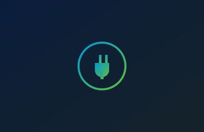

My WordPress Plugins
A collection of custom-built WordPress & WooCommerce plugins, crafted for performance, clean code, and real business logic.
Published on WordPress.org
Free, actively maintained plugins used on live WordPress sites

Public Preview URL Manager
Share secure, token-based preview links for unpublished pages — works with every major page builder, no login required for reviewers.
View PluginFirewall Manager
Manage your GoDaddy (Sucuri) website firewall right from wp-admin — clear the CDN cache, allowlist IPs, and view access in real time.
View PluginInternal Notes Hub
Turn WordPress into a team workspace with sticky notes, @mentions, and color-coded priorities on posts, products, and user profiles.
View PluginManage Media Support
Unlock uploads for SVG, WebP, fonts, PDFs, and dozens more file types, with strict MIME validation and built-in SVG sanitizing.
View PluginVisual DB
A fast, secure React data grid for managing WordPress database tables — inline editing, bulk actions, and CSV export.
View PluginCustom Theme Templates
Build custom page templates visually from wp-admin with drag-and-drop — no theme files touched, fully responsive on every device.
View PluginPopup Builder
Create unlimited high-converting popups with advanced triggers (exit intent, scroll depth, WooCommerce hooks), multi-step sequences, and zero bloat on non-popup pages.
View PluginLogo Slider
A professional, responsive logo carousel powered by Slick Carousel. Features drag-and-drop ordering, shortcodes, Elementor widget, and clean conditional asset loading.
View PluginContact Me
Let’s connect — I’m open to freelance work, collaborations, or just a chat.